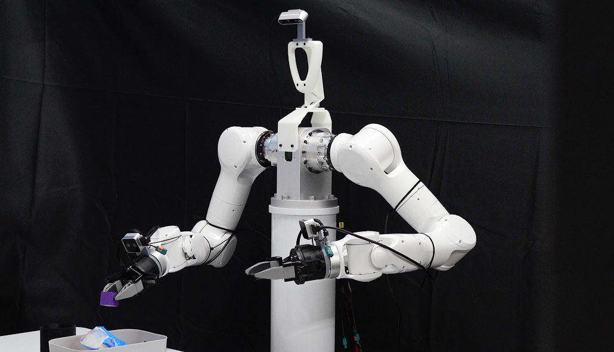
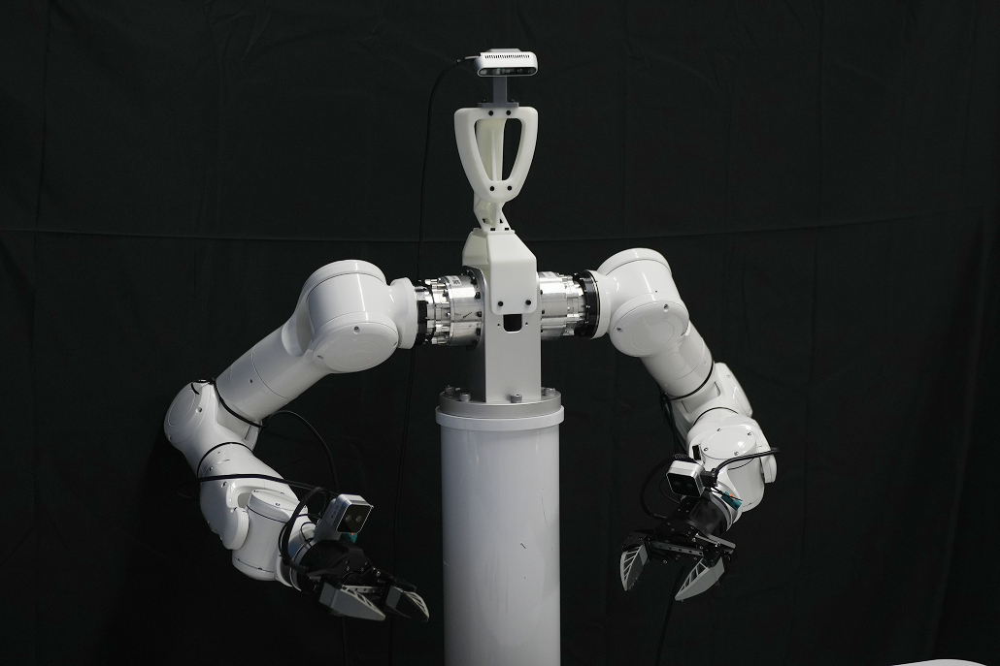
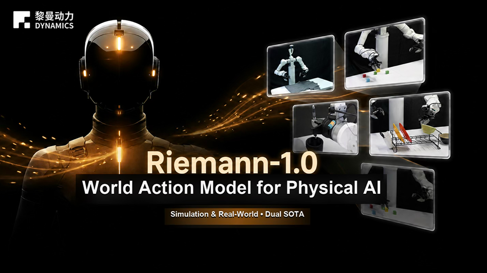

Riemann-1.0: A World Action Model for Physical AI
Releases · July 17, 2026
Riemann Dynamics specializes in embodied intelligence and Physical AI, and is committed to building a next-generation general-purpose robot brain for the real world. Based on the Matrix-Game world model technology framework, we have constructed a unified intelligence framework that integrates world understanding, future prediction, and action decision-making, enabling robots to continuously understand their environment, autonomously plan, and perform complex tasks.
Homepage: https://riemann-dynamics.github.io/Riemann-1.0-Website/
Technical report: https://arxiv.org/abs/2608.27033
We look forward to sharing more of Riemann-1.0 with researchers, developers, and partners as we continue building toward a general-purpose embodied brain.

A data foundation built for open-world transfer
Riemann-1.0 is trained on more than 232,000 hours of embodied interaction data spanning 41 robot embodiments, combining first-person human video, VLM teleoperation demonstrations, and real robot trajectories. A self-built automated data engine — using VLM annotation, 3D hand reconstruction, and action-quality filtering — turns open-world human experience into data a robot can actually learn from, rather than relying on robot data alone.
One model, two jobs
Most systems split the work: a policy model decides what to do, a separate world model imagines what happens next. Riemann-1.0 puts both in one fully causal autoregressive model, so the same network can act as a real-time robot policy and as a world simulator that predicts what its embodied experience will change.
Learning from humans first, robots second
Because labeled robot data is scarce but human video is abundant, Riemann-1.0 is trained in three progressive stages: it first learns raw physical dynamics from unlabeled human video, then aligns those learned actions with real robot control using teleoperation and motion-capture data, and finally sharpens its policy on high-quality robot-trajectory data.
Leading results, in simulation and on real robots
Riemann-1.0 sets a new state of the art on RoboTwin 2.0 (94.3%) and the long-horizon RoboCasa-365 benchmark (62.6%, +8.4 points over the previous best), with highly competitive results on LIBERO (99.0%) as well. On a real dual-arm robot, it averages 85.0% success across household tasks — cube stacking, kitchen organization, desk organization, and clothes folding — ahead of every other model we tested against.
This is just the beginning. Riemann-1.0 is our first public step toward a general embodied brain — one that can keep learning from the world and turn that understanding into real, physical capability.
